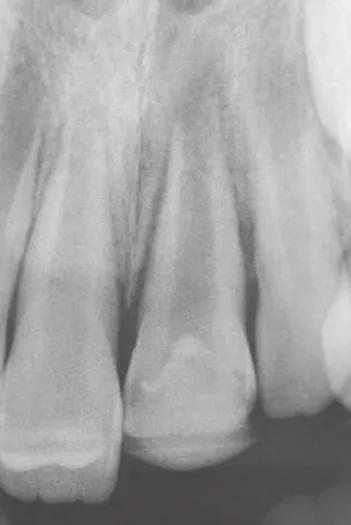
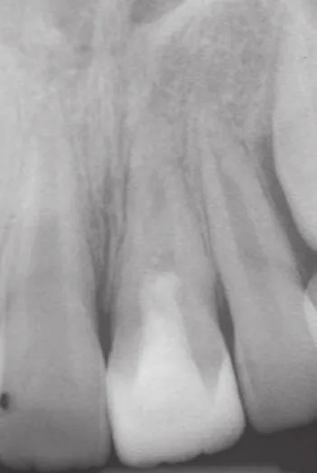

نسخه استخراجشده؛ ترجمه یا تأیید علمی انجام نشده است. وضعیت: captured
اپکسیفیکیشن انتهای ریشه را میبندد، ولی دیواره را نازک باقی میگذارد.
ایده: کانال ضدعفونی میشود، سپس با تحریک ناحیهی آپیکال، خونریزی کنترلشدهای وارد کانال میشود که سلولهای بنیادی ناحیهی پریاپیکال را با خود میآورد.
این لخته داربستی میسازد که بافت جدید در آن رشد میکند — و نتیجه میتواند ادامهی رشد ریشه و ضخیم شدن دیواره باشد.
شرط اصلی: آپکس باید بهاندازهی کافی باز باشد؛ در آپکس بسته این روش کار نمیکند.


مهمترین تفاوت اجرایی با درمان ریشهی معمول: کانال تراش داده نمیشود.
دیوارهی دندان جوان از قبل نازک است؛ هر تراش، آن را نازکتر میکند. پس پاکسازی تقریباً کاملاً شیمیایی است: شستوشوی فراوان و ملایم، سپس داروی داخل کانال تا جلسهی بعد.
هشدار مهم: غلظت بالای برخی داروهای داخل کانال میتواند سلولهای بنیادی را از بین ببرد — یعنی دقیقاً همان چیزی که به آن نیاز داری. غلظت پایین توصیه میشود.
و یک عارضهی شناختهشده: برخی مواد و داروها باعث تغییر رنگ تاج میشوند — این را از پیش به بیمار بگو.